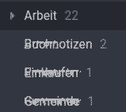

Joplin 7-Month Retrospective: Unfulfilled Promises
2023-07-04
My existing note management solution hasn't been cutting it for a while now. My current approach to notes and knowledge management has been to keep things in Joplin (with my 5TB university OneDrive as the backend), as well as use Simplenote as a "drafting box" for things like blog post articles and some small temporary notes. However, Joplin hasn't really lived up to what I hoped it would enable for me when I first set it up around 7 months ago. While there are many gripes I've had with it, below are the biggest three I had, and the ones I really hope the platform can sort out in the future.
Gripe #1: Plugins Aren't What They're Chalked Up To Be
Starting with a (somewhat) small one, the plugin system is very rudimentary, and doesn't actually deliver the customizability advertised on the rool's website. First of all, plugins are desktop only, meaning that if there's a plugin that plays a significant role in how you use your notes, you don't get to use it on the go. Contrast this with Obsidian, where there's mobile plugin support, and a significant amount of supported plugins. Furthermore, plugins don't sync between devices. This means that for every device I set up, which is a lot given the amount of laptops I rotate through, I'd need to manually install and configure a whole host of plugins. Combine that with a relatively poor plugin ecosystem compared to other applications, and I opted to just not bother with plugins.
Gripe #2: Poor Desktop UI
This was a much bigger deal-breaker for me. The desktop application flat-out sucks. It already gets significant points taken off for being an Electron application, which switching to a HiDPI laptop has made me absolutely despise. However, it's also not even a well-executed Electron application, with a frustratingly laid out UI, very little customization, and odd visual glitches like this one that constantly popped up:

The desktop client feels like it gets very little love compared to the mobile one, which is frustrating for an application like a note-taking application where a lot of work will be done at a computer with a keyboard. It's bad enough that a lot of people who do use Joplin, like Chris from Linux Unplugged interact with it exclusively using a VSCode plugin. However, I want to keep my code editor and my notes application separate, and the VSCode plugin has also proven to be unreliable, which was the impetus for Chris finally ditching Joplin.
Gripe #3: Sync Issues
I haven't even dared try to install Joplin on my newest laptop, lest it erases my existing notes and I have to fix it again. While I appreciate the effort Joplin goes to in order to support a variety of backends, unfortunately I've been faced with a number of sync issues from the beginning. It's become routine to export my Joplin notes, because sync will often break out of nowhere right in the middle of syncing some changes, and the only way I can get it to complete is to take an export, delete all of my notes locally so that they get erased remotely, then restore all of my notes from the export. I shouln't need to do that regularly in any piece of software, let alone with something as irreplaceable as my notes. A lack of trust in the sync solution has really dissuaded me from continuing to use Joplin recently, and until I can get my notes somewhere else, it'll likely continue to be that way.
Takeaways
I don't mean to completely rag on Joplin. There's a lot that's done right on the backend, especially when it comes to the freedom to sync your notes the way you want. However, I can't help but feel that Joplin has a long way to go to be the Evernote replacement it purports to be, and a lot of users are probably better served looking at other solutions for managing their information.